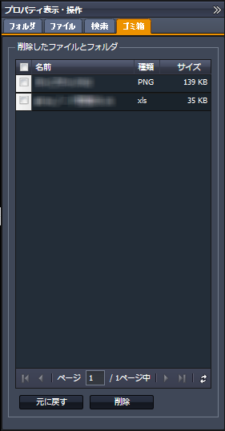
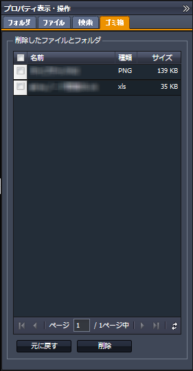

SecretFilesマニュアル
3. SecretFilesサービス
3.2 各ペインの説明
3.2.4 右ペイン(プロパティ表示・操作ペイン)
 右ペインは初期状態では、右端に隠れた状態になっています。
右ペインは初期状態では、右端に隠れた状態になっています。表示されているタイトルバーの上端にある
 をクリックして下さい。
をクリックして下さい。表示領域がスライドして、ペインが表示されます。

3.2.4.5 ゴミ箱
プロパティペインにて削除したフォルダ、ファイルはゴミ箱ペインに一覧表示されます。
つまり、ここに表示されている段階では、まだ実際には削除が実行されていないということです。

リストの左端のチェックボックスをチェックし、「元に戻す」「削除」のいずれかをクリックして下さい。
「元に戻す」をクリックすると、これまでの操作で行なった「削除」はキャンセルされ、フォルダもファイルも元の場所に戻ります。
「削除」をクリックすると、サーバから完全に削除され、元に戻すことができなくなります。
このリストには、一度に25までのフォルダ、ファイルを表示します。
ゴミ箱の中にあるフォルダやファイルが多く、一度に表示しきれない場合には、リスト表示の最下段にあるページングバーにて別のページを読み込んでください。
つまり、ここに表示されている段階では、まだ実際には削除が実行されていないということです。

リストの左端のチェックボックスをチェックし、「元に戻す」「削除」のいずれかをクリックして下さい。
「元に戻す」をクリックすると、これまでの操作で行なった「削除」はキャンセルされ、フォルダもファイルも元の場所に戻ります。
「削除」をクリックすると、サーバから完全に削除され、元に戻すことができなくなります。
このリストには、一度に25までのフォルダ、ファイルを表示します。
ゴミ箱の中にあるフォルダやファイルが多く、一度に表示しきれない場合には、リスト表示の最下段にあるページングバーにて別のページを読み込んでください。